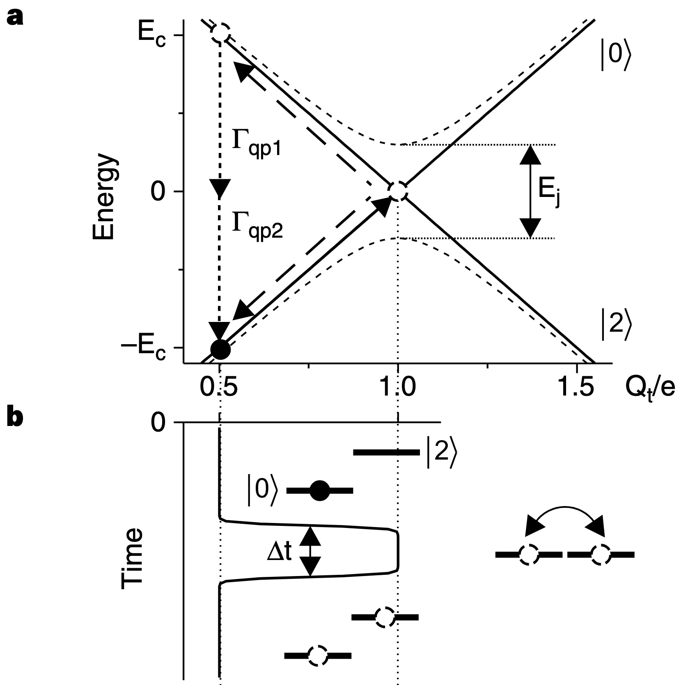
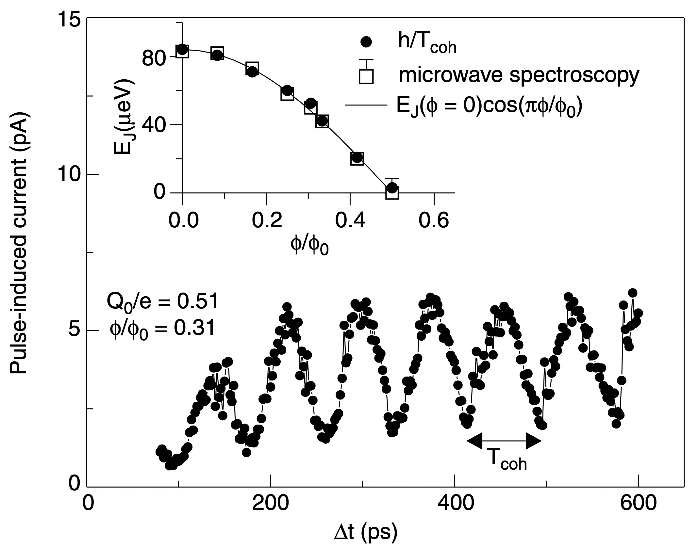
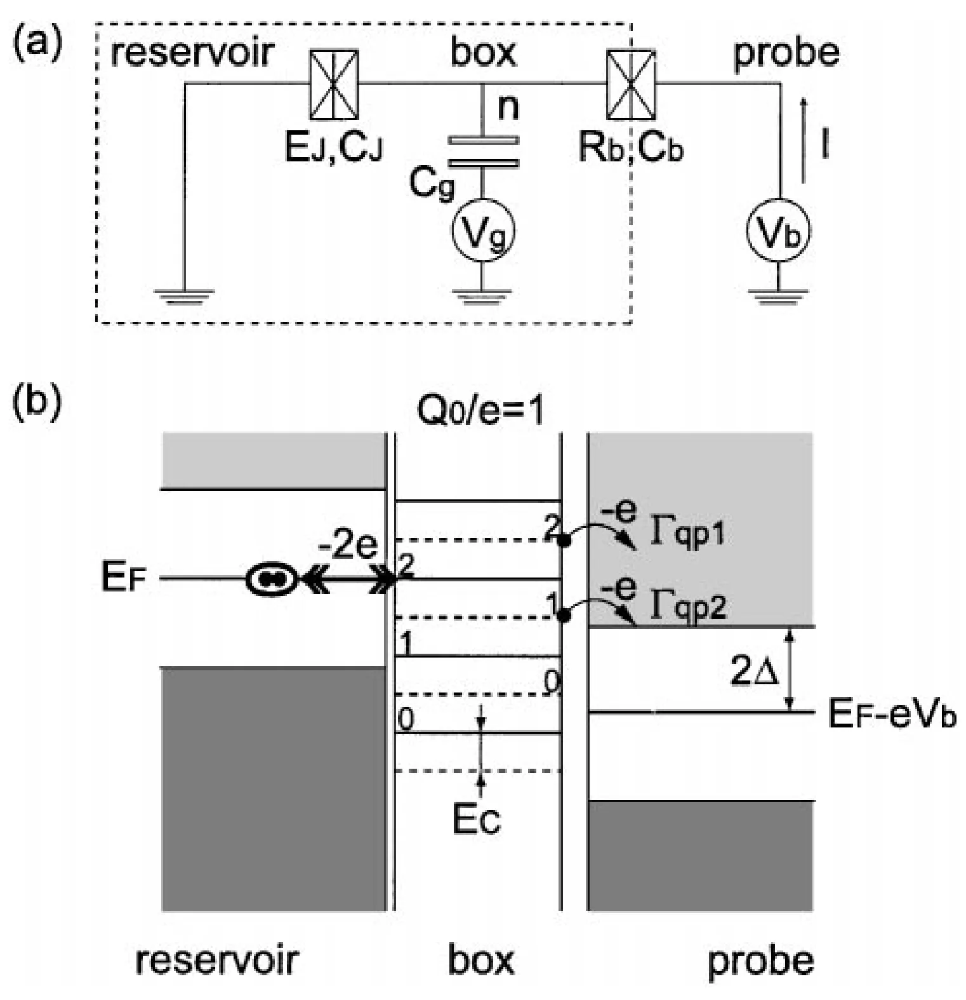
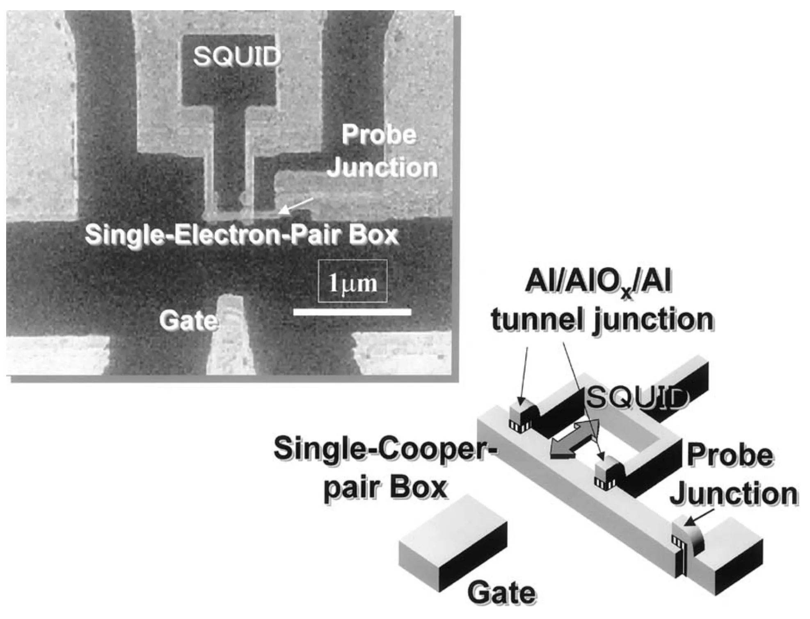
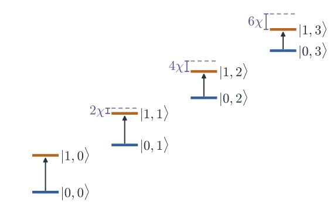
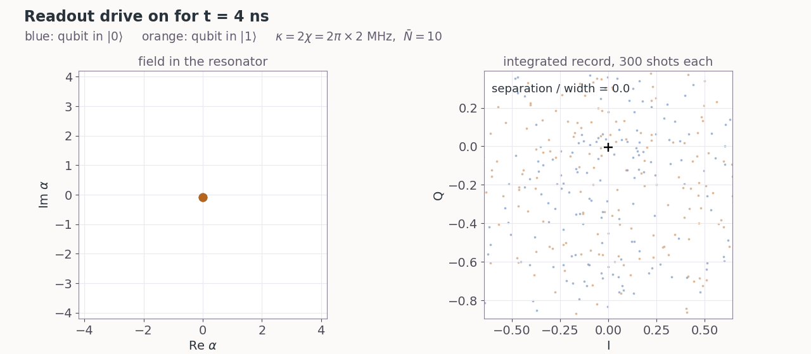
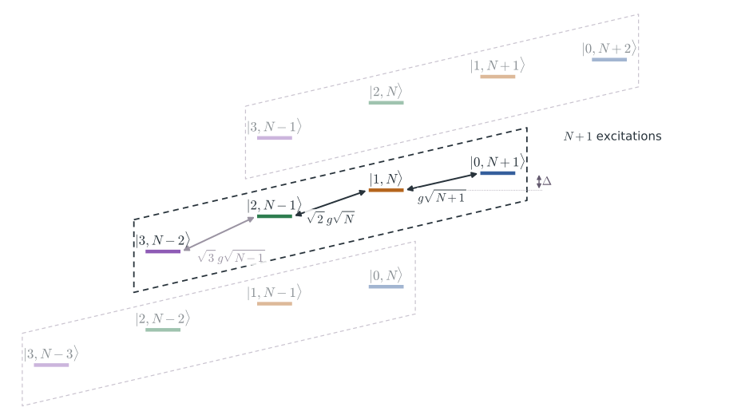
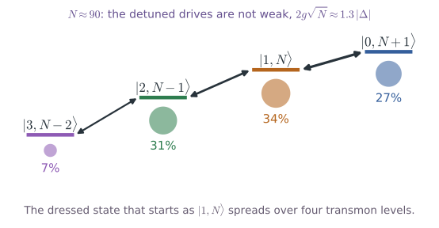

PHYS598500 · Week 7
Qubit Readout
Dispersive readout on a chip

Device image: T. Wang et al., Phys. Rev. Applied 11, 034030 (2019), Fig. 1(b); it only shows the signal lines. Lecture animation of an ideal model: \(\kappa=2|\chi|=2\pi\times2\) MHz, probe between \(\omega_r(0)\) and \(\omega_r(1)\).
Dilution refrigerator wiring
This dilution refrigerator has 25 drive, 25 flux, 4 read-out, 6 read-in and 5 pump lines (a).
The lines pass five plates, from 35 K to 10 mK (b).
The input lines have attenuators and filters. The output line has isolators and amplifiers.

S. Krinner et al., EPJ Quantum Technology 6, 2 (2019), Fig. 3 (arXiv version).
Input-line attenuators and filters
An attenuator passes a small part of the signal and adds the noise of its own, cold temperature. 20 dB passes 1%.
About 60 dB in total brings the thermal photons at the chip to about \(10^{-3}\).
Copper plates hold the attenuators and keep them cold (a–d).
An Eccosorb filter absorbs infrared light. Infrared light makes quasiparticles and shortens \(T_1\).

S. Krinner et al., EPJ Quantum Technology 6, 2 (2019), Fig. 4 (arXiv version).
Readout setup and circulator
A circulator sends a wave from port 1 to port 2, from 2 to 3, and from 3 to 1.
An isolator is a circulator with a 50 Ω load on port 3. A wave goes from 1 to 2. A wave from 2 goes into the load.

P. Krantz et al., Appl. Phys. Rev. 6, 021318 (2019), Fig. 19 (arXiv version).
Readout setup

F. Arute et al., Nature 574, 505 (2019), Supplementary Information, Fig. S3 (arXiv version).
Ferrite circulator
Superconducting processors use ferrite circulators at 10 mK. Right: a 4–8 GHz cryogenic circulator, the type on the cold plate of a refrigerator.
Inside: a Y-shaped conductor between two ferrite discs. Magnets bias the ferrite. The wave from one port leaves only at the next port.
The magnets need a magnetic shield near the qubits.

Right: QuinStar Technology, QCY-G0400801 4–8 GHz cryogenic circulator, datasheet (2019). Left: drawing, not to scale.
On-chip circulator
A research device. Processors still use ferrite circulators.

R. Navarathna et al., Phys. Rev. Lett. 130, 037001 (2023), Fig. 1 (arXiv version).
First amplifier at 10 mK
The first amplifier is next to the chip, at 10 mK. It is a Josephson parametric amplifier: a JPA, an IMPA or a TWPA.
It needs a pump tone. It adds almost only the quantum noise.
The figure shows a TWPA in its box (a), its line with resonators (b) and its junctions (c).

T. C. White et al., Appl. Phys. Lett. 106, 242601 (2015), Fig. 2 (arXiv version).
Circulators and isolators in the refrigerator
In the refrigerator: isolator arrays at 10 mK (a) and circulators at the cold plate (c), each with a magnetic shield.

S. Krinner et al., EPJ Quantum Technology 6, 2 (2019), Fig. 6 (arXiv version).
PHYS598500 · Week 7
Amplifiers
Quantum-limited amplification
An ideal amplifier would give \(\hat a_{\rm out}=\sqrt G\,\hat a_{\rm in}\). Then \(\big[\hat a_{\rm out},\hat a_{\rm out}^\dagger\big]=G\neq1\), and this output is not possible.
The idler mode \(\hat b_{\rm in}\), in vacuum, must enter the output (b). Both quadratures gain \(\sqrt G\), and the idler vacuum adds half a photon of noise (c, blue):

P. Krantz et al., Appl. Phys. Rev. 6, 021318 (2019), Fig. 25 (arXiv version).
Quantum limit of the added noise
Ten photons that leave at \(\kappa=2\pi\times2\) MHz give about \(10^8\) photons per second. At 7 GHz, this is \(6\times10^{-16}\) W.
Each amplifier adds noise. We count it as photons per mode:
A HEMT at 4 K has \(T_N\approx2\)–4 K. This gives \(N_{\rm add}\approx6\)–12 at 7 GHz.
Count the noise in photons. With \(\hat I=\frac12\big(\hat a+\hat a^\dagger\big)\) and \(\hat Q=\frac{1}{2i}\big(\hat a-\hat a^\dagger\big)\):
In vacuum, \(\langle\Delta\hat I^2\rangle=\langle\Delta\hat Q^2\rangle=\frac14\): together \(\frac12\). This is the half photon of the vacuum.
The pump makes signal and idler photons in pairs. The idler \(\hat b_{\rm in}\) is in vacuum:
Divide by \(G\): the idler adds \(\frac14\) to each quadrature, \(\frac14+\frac14=\frac12\). The amplifier adds half a photon, \(N_{\rm add}=\frac12\). With the half photon of the input vacuum, the total is 1 photon.
C. M. Caves, Phys. Rev. D 26, 1817 (1982).
Current-pumped and flux-pumped JPA
A JPA is a resonator that ends in a SQUID (a). The SQUID gives the nonlinearity.
Current pump (b): \(\omega_{\rm pump}\approx\omega_a\) (\(\omega_p\), \(\omega_r\) in the figure). Two pump photons give a signal photon and an idler photon: \(2\omega_{\rm pump}=\omega_s+\omega_i\).
Flux pump (c): a flux line changes the SQUID inductance at \(\omega_{\rm pump}\approx2\omega_a\). One pump photon gives a signal photon and an idler photon: \(\omega_{\rm pump}=\omega_s+\omega_i\).
The flux pump is far from the signal frequency. It is easy to filter.

P. Krantz et al., Appl. Phys. Rev. 6, 021318 (2019), Fig. 27 (arXiv version).
Impedance-matched parametric amplifier (IMPA)
A tapered line, 50 Ω to 15 Ω, couples a flux-pumped JPA strongly to the 50 Ω line (a).
The band is up to 700 MHz, near the quantum limit. A JPA with \(Q=10\) has only about 60 MHz.
Sycamore uses IMPAs as its first amplifiers.

J. Y. Mutus et al., Appl. Phys. Lett. 104, 263513 (2014), Fig. 1 (arXiv version).
SNAIL parametric amplifier
A SNAIL is a loop with three large junctions and one small junction (c). With flux, its energy has a \(\varphi^3\) term.
The \(\varphi^3\) term gives three-wave mixing: \(\omega_{\rm pump}=\omega_s+\omega_i\), with \(\omega_{\rm pump}\approx2\omega_a\).
An array of 20 SNAILs (b) lets the amplifier take more power. At 20 dB gain, the 1 dB compression point is −102 to −112 dBm.
The band is tunable over 1 GHz, with quantum-limited noise.

N. E. Frattini et al., Phys. Rev. Applied 10, 054020 (2018), Fig. 1 (arXiv version).
Traveling-wave parametric amplifier (TWPA)
A TWPA is a transmission line. Each cell has a junction \(L_J\) in the line and a capacitor \(C\) to ground (left, a).
The signal gains a little in each cell as it travels with the pump (left, b).
LC resonators (red) set the phase of the pump. Then the gain is about 20 dB over several GHz (left, c, d).
Right: a chain of SQUIDs under a top ground. The SQUID height changes periodically. This makes a gap (d). The band is 3 GHz, and the noise is near the quantum limit.


Left: P. Krantz et al., Appl. Phys. Rev. 6, 021318 (2019), Fig. 28. Right: L. Planat et al., Phys. Rev. X 10, 021021 (2020), Fig. 1 (arXiv versions).
PHYS598500 · Week 7
Measurement
Measurement model
A measurement couples the qubit to a detector:
\(\hat{\mathcal H}_m\) entangles the qubit with the detector:
\(|{\rm det}_0\rangle\), \(|{\rm det}_1\rangle\): the pointer states. Read the detector: the result is 0 with \(|c_0|^2\) and 1 with \(|c_1|^2\).
CPB: the detector is a probe junction. Transmon: the detector is the readout resonator.
CPB control and readout








Destructive readout of the CPB
\(|0e\rangle,|1e\rangle,|2e\rangle\): 0, 1 or 2 extra electrons on the box. The measured operator is \(\hat O=|2e\rangle\langle 2e|\).
The detector is the probe electrode. One electron can tunnel from the box into it:
\(\hat c_k^\dagger\): one electron in the probe state \(k\). \(T\): the tunnel amplitude. h.c.: the reverse events.
Each tunnel event changes \(\hat O\): \(|2e\rangle\to|1e\rangle\to|0e\rangle\). These events are the current.
After the readout, the box is in \(|0e\rangle\). The readout destroys the state that it measures.
Y. Nakamura, Yu. A. Pashkin and J. S. Tsai, Nature 398, 786 (1999).
Definition of a QND measurement
QND: quantum non-demolition. The measurement does not change the measured quantity.
A measurement of \(\hat O\) is QND when \(\hat O\) does not change during the measurement: \(\frac{d\hat O}{dt}=\frac{i}{\hbar}\big[\hat{\mathcal H},\hat O\big]=0\).
\(\hat{\mathcal H}_{\rm det}\) acts only on the detector. The conditions are:
Qubit readout: \(\hat O=|1\rangle\langle1|\). Its value is 1 for \(|1\rangle\) and 0 for \(|0\rangle\).
Test: a strong measurement (d), then a second one. \(P(1|0)\): the second readout gives 1 after the first gave 0.
![(a) Integrated detector signal against the sampling time for the qubit in |0> (blue) and |1> (red): the two means theta_0 and theta_1 move apart linearly, the noise bands grow more slowly and overlap at early times; three arrows mark three sampling times. (b) Histograms at an early time overlap: weak measurement, SNR below 1. (c) At a later time they start to separate. (d) At a long time they are fully separated: strong measurement, SNR above 1; the separation delta theta and the widths Delta theta_0 and Delta theta_1 are marked](../Image/Krantz2019-Fig23.png)
P. Krantz et al., Appl. Phys. Rev. 6, 021318 (2019), Fig. 23.
PHYS598500 · Week 7
Transmon coupled to a resonator
Coupling term and RWA
The transmon is a ladder with \(\omega_{01}=\omega_p+\alpha\). The resonator is a ladder with \(\alpha=0\):
The coupling capacitor gives:
\(\hat a^\dagger\hat a_r\) and \(\hat a\hat a_r^\dagger\) move one excitation between the transmon and the resonator. \(\hat a^\dagger\hat a_r^\dagger\) and \(\hat a\hat a_r\) add or remove two excitations. They couple levels \(\omega_{01}+\omega_r\approx2\pi\times12\) GHz apart. Drop them (RWA).
The level \(|j,n\rangle\) has the transmon in \(j\) and \(n\) photons. Each term keeps \(j+n\), the number of excitations. With \(\Delta\equiv\omega_{01}-\omega_r\):
The term \(\omega_r\big(\hat a^\dagger\hat a+\hat a_r^\dagger\hat a_r\big)\) moves all levels with the same \(j+n\) by \((j+n)\,\omega_r\). It does not mix them. Take it off the diagonal: write \(|j,n\rangle\) at \(E_{j,n}-(j+n)\hbar\omega_r\).
Hamiltonian matrix in the \(|j,n\rangle\) basis
Transmon levels 0–2, 0–3 photons. Each block has one value of \(j+n\): 0, 1, 2, 3. Blue: qubit levels 0 and 1. Orange: level 2 and its couplings.
\(\omega_{01}\) and \(\omega_r\) have left the matrix: only \(\Delta\), \(\alpha\) and \(g\) are left. The blocks do not mix.
Dispersive shift \(\chi\)
\(E_{j,n}\): the eigenvalues of the matrix on the previous page. Between readouts the resonator is empty, so start from \(|0,0\rangle\).
When \(g\ll|\Delta|\), the qubit and the resonator do not exchange energy. This is the dispersive regime. Each coupling shifts the levels a little (second order). A coupling \(c\) to a level at the distance \(d\) gives \(\frac{c^2}{d}\):
\(|1,1\rangle\) couples with \(\sqrt2g\) to \(|0,2\rangle\) (distance \(\Delta\)) and to \(|2,0\rangle\) (distance \(-(\Delta+\alpha)\)):
The qubit transition with 0 photons and with 1 photon:
The difference is \(2\chi\):
The true energies are \(E_{j,n}+(j+n)\,\omega_r\). The \(\omega_r\) terms cancel in \(2\chi\).
Recall: two coupled transmons have \(\zeta\approx\frac{2g^2(\alpha_1+\alpha_2)}{(\Delta+\alpha_1)(\Delta-\alpha_2)}\). With \(\alpha_2=0\), \(\zeta=2\chi\).
Dispersive Hamiltonian
The block of \(|1,N\rangle\) has the same form for each \(N\). The same steps give, for the qubit levels 0 and 1:
Add back \((j+n)\,\omega_r\). One Hamiltonian gives all these levels:
The resonator frequency for each qubit state:
The last term has two readings. The resonator frequency depends on the qubit state. This gives the readout.
The qubit frequency depends on the photon number, \(2\chi\) for each photon. This is the AC Stark shift, the backaction of the readout.


Picture: solid bars are dressed levels; the dashed bar is \(E_{0,n}+E_{1,0}-E_{0,0}\). Not to scale.
Photon-number splitting

D. I. Schuster et al., Nature 445, 515 (2007), Fig. 3 (arXiv version). Left: dressed levels; the dashed bar is \(E_{0,n}+E_{1,0}-E_{0,0}\). Not to scale.
Dispersive readout on a chip
Device image: T. Wang et al., Phys. Rev. Applied 11, 034030 (2019), Fig. 1(b); it only shows the signal lines. Lecture animation of an ideal model: \(\kappa=2|\chi|=2\pi\times2\) MHz, probe between \(\omega_r(0)\) and \(\omega_r(1)\).
Resonator pointer states


Lecture animation: \(\kappa=2|\chi|=2\pi\times2\) MHz, \(\bar N=10\), white amplifier noise.
Single-shot readout
Prepare \(|0\rangle\) and read. Prepare \(|1\rangle\) and read. Do this thousands of times. The same form as the QND fidelity, with the prepared state in place of the first result. \(P(1|0)\): read 1 after \(|0\rangle\) was prepared.


Left: lecture figure, SNR 8, readout 500 ns, \(T_1=30\) μs, 0.5% thermal population. Right: T. Walter et al., Phys. Rev. Applied 7, 054020 (2017), Fig. 2 (arXiv version).
PHYS598500 · Week 7
QND of the dispersive readout
Dispersive readout and the QND condition
Qubit readout: \(\hat O=|1\rangle\langle1|\). The detector is the resonator. With weak drives, the three parts of \(\hat{\mathcal H}\) are:
\(\hat{\mathcal H}_q\) and \(\hat{\mathcal H}_m\) contain the qubit only as \(|1\rangle\langle1|\). They commute with \(\hat O\). The dispersive readout is QND.
This \(\hat{\mathcal H}_m\) is an approximation of the exact coupling.
Non-QND terms of the exact coupling
The exact coupling moves one excitation between the qubit and the resonator. It does not commute with \(\hat O\):
It moves \(|1,N\rangle\) to \(|0,N+1\rangle\), detuned by \(\Delta\), and to \(|2,N-1\rangle\), detuned by \(\Delta+\alpha\). These moves add only small parts:
The probabilities of the small parts, with \(N_{\rm crit}=\big(\frac{\Delta}{2g}\big)^2\):
| \(N\) | \(|0,N{+}1\rangle\) part \(\Big(\dfrac{g}{\Delta}\Big)^2(N+1)=\dfrac{N+1}{4N_{\rm crit}}\) | \(|2,N{-}1\rangle\) part \(\dfrac{2g^2N}{(\Delta+\alpha)^2}\) |
|---|---|---|
| 0 | 0.004 | 0 |
| 10 | 0.05 | 0.07 |
| 56 \((N_{\rm crit})\) | 0.25 | 0.38 |
Values: \(g=2\pi\times100\) MHz, \(\Delta=-2\pi\times1.5\) GHz, \(\alpha=-2\pi\times220\) MHz, \(\kappa=2\pi\times2\) MHz.
PHYS598500 · Week 7
Purcell decay, transitions and backaction
Level diagram for \(N\) photons


Schematic, not to scale.
Dressed state \(|1,N\rangle\) at large \(N\)


Populations from the exact RWA block, \(g=2\pi\times100\) MHz, \(\Delta=-2\pi\times1.5\) GHz, \(\alpha=-2\pi\times220\) MHz. When \(N\) decreases slowly, the state returns to \(|1,N\rangle\).
Measurement-induced state transitions

D. Sank et al., Phys. Rev. Lett. 117, 190503 (2016), Fig. 2 (arXiv version).
Pipelined stabilizer measurement


R. Versluis et al., Phys. Rev. Applied 8, 034021 (2017), Figs. 4 and 5(a).
Resonator decay rate \(\kappa\)
(a) The qubit is directly on the line. The line damps the qubit, and the measurement destroys the state.
(b) The qubit couples to a resonator, and the resonator couples to the line. The line sees only the resonator. The photons leave at the rate \(\kappa\). Each photon carries a little information about the qubit.
(c) A Purcell filter is between the resonator and the line.
For a two-qubit gate, \(\kappa\) of the partner must be almost 0. For the readout, \(\kappa\) gives the signal.
The capacitor marked \(\kappa\) in (b), \(C_\kappa\), sets the rate. With the line impedance \(Z_0\) and the resonator capacitance \(C_r\):
For \(\omega_r=2\pi\times7\) GHz, \(C_r=400\) fF and \(Z_0=50\ \Omega\), \(\kappa=2\pi\times2\) MHz needs only \(C_\kappa\approx7\) fF.

P. Krantz et al., Appl. Phys. Rev. 6, 021318 (2019), Fig. 24(a–c) (arXiv version). \(\kappa\) from \(C_\kappa\): M. Göppl et al., J. Appl. Phys. 104, 113904 (2008).
Purcell filter
A band-pass filter is between the resonator and the line. At \(\omega_r\), \(\kappa\) stays large. At \(\omega_{01}\), the filter almost cuts the line. The Purcell decay of the qubit decreases by a large factor.
Right: the filter F on a chip (a). The readout resonators are in the pass band, and the qubits are outside it (b).


Left: P. Krantz et al., Appl. Phys. Rev. 6, 021318 (2019), Fig. 24(d) (arXiv version). Right: E. Jeffrey et al., Phys. Rev. Lett. 112, 190504 (2014), Fig. 1 (arXiv version).
Purcell filters on a chip
Four qubits (green dots in the corners). Each qubit has its own readout resonator (red) and its own Purcell filter (blue).
Each pair has its own length, so its own frequency. A quarter-wave line of length \(\ell\) has \(\omega=\tfrac{\pi v}{2\ell}\). The four readout frequencies are 10.2–10.7 GHz.
All four filters meet the readout line at the centre.
At the qubit frequencies, 8.0–9.0 GHz, the filters block the signal. The qubits cannot leak out through the line.

P. A. Spring et al., PRX Quantum 6, 020345 (2025), Fig. 4(a); labels added.
PHYS598500 · Week 7
Cross-Kerr coupling
Exchange coupling and cross-Kerr coupling
The capacitor gives an exchange coupling. In the block of \(|0,N{+}1\rangle\) and \(|1,N\rangle\):
The off-diagonal term moves one excitation between the qubit and the resonator.
\(\chi\) comes only from the second order, when \(g\sqrt{N+1}\ll|\Delta|\):
The same off-diagonal term gives the Purcell decay and, near \(N_{\rm crit}\), the jumps to other levels.
A cross-Kerr coupling gives \(\hat{\mathcal H}_m\) directly:
In the same block:
There is no off-diagonal term. \(|1,N\rangle\) does not move to \(|0,N{+}1\rangle\). \(\chi\) does not come from \(\Delta\).
The circuit must remove the exchange term and keep the nonlinear term. There are two methods:
(1) Two exchange paths with opposite signs cancel: a capacitor and a junction in parallel.
(2) Symmetry: the coupling has only even powers of the qubit phase.
Cancelled exchange coupling
(a) A coupler between two transmons: a capacitor and a junction in parallel.
The capacitor gives an exchange \(J_{\rm C}\). The junction gives an exchange \(-J_{\rm L}\) and a cross-Kerr term \(V_{\rm L}\).
The flux \(\Phi_3\) through the SQUID changes \(J_{\rm L}\). At \(J_{\rm L}=J_{\rm C}\), the exchange is zero. The cross-Kerr term stays.
(b) The chip: two transmons, the coupler, flux lines, drive lines, and readout resonators \(R_1\), \(R_2\) on one feedline. (c) The circuit.
Measured: the exchange is zero near \(\Phi_3\approx0.3\,\Phi_0\). The model gives \(|\zeta|\approx2\pi\times4\) MHz there. \(T_1=15\)–\(40\ \mu\)s.
![(a) a coupler made of a capacitor in parallel with a Josephson junction; the capacitor gives the hopping J_C (a dagger b + b dagger a), the junction gives minus J_L (a dagger b + b dagger a) plus V_L (a + a dagger) squared (b + b dagger) squared; the coupler on a lattice of transmons; (b) optical micrograph of two transmons with a SQUID coupler (flux Phi_3), flux lines Phi_1 and Phi_2, drive lines, readout resonators R1 and R2 on a feedline, scale bar 200 micrometres; (c) circuit: two SQUID transmons E_J1 and E_J2 with capacitors C, the coupler E_Jc with C_c, and ground capacitors C_1g and C_2g](../Image/Kounalakis2018-Fig1.png)
M. Kounalakis et al., npj Quantum Inf. 4, 38 (2018), Fig. 1 (arXiv version).
Transmon molecule
(c) Two equal transmons share an LC circuit. Qubit mode: the two junction phases move together. Ancilla mode: they move in opposite directions.
By symmetry, the qubit–ancilla coupling has no exchange term. Its lowest term is cross-Kerr.
The ancilla has a strong exchange with the 3D cavity (a). The qubit does not couple to the cavity. (d) Optical picture and SEM.
Readout: \(2\chi=-2\pi\times9\) MHz. \(F=94.7\%\) in 50 ns. QND fidelity \(97.9\%\) with long pulses. An exchange coupling with the same \(2\chi\) needs \(g\approx2\pi\times180\) MHz. Its Purcell limit is \(T_1\approx0.24\ \mu\)s.
![(a) photographs of the two halves of the copper 3D cavity with input and output connectors, the sample at the centre, 35 mm by 5 mm; (b) sketch of the electric field of the first cavity mode and the cavity and sample directions; (c) lumped circuit of the transmon molecule: two junctions E_J with capacitors C_S, coupled by an inductance L_a in parallel with C_t, flux Phi; (d) optical picture of the 1.9 mm sample and SEM picture of the 28 micrometre loop with the two junctions in red and the SQUID chain in green](../Image/Dassonneville2020-Fig2.png)
R. Dassonneville et al., Phys. Rev. X 10, 011045 (2020), Fig. 2 (arXiv version).
PHYS598500 · Week 7